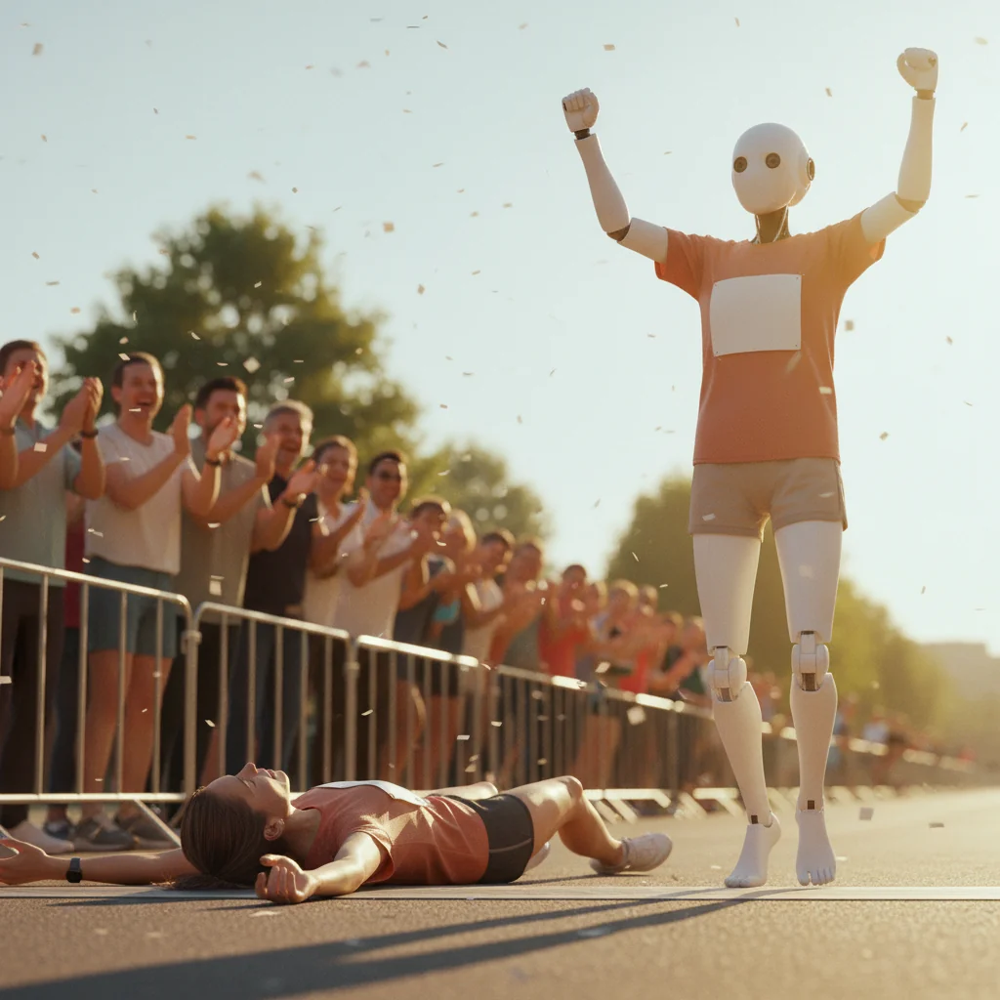
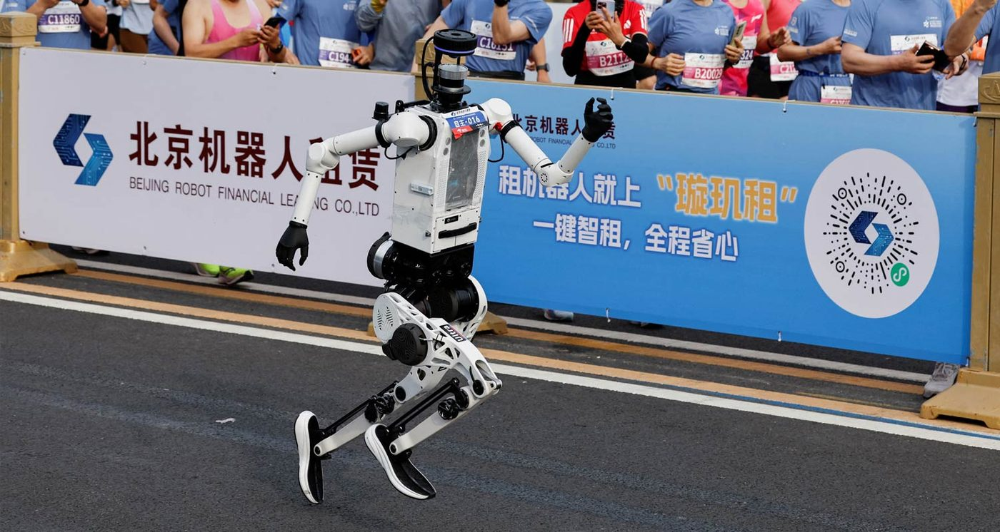
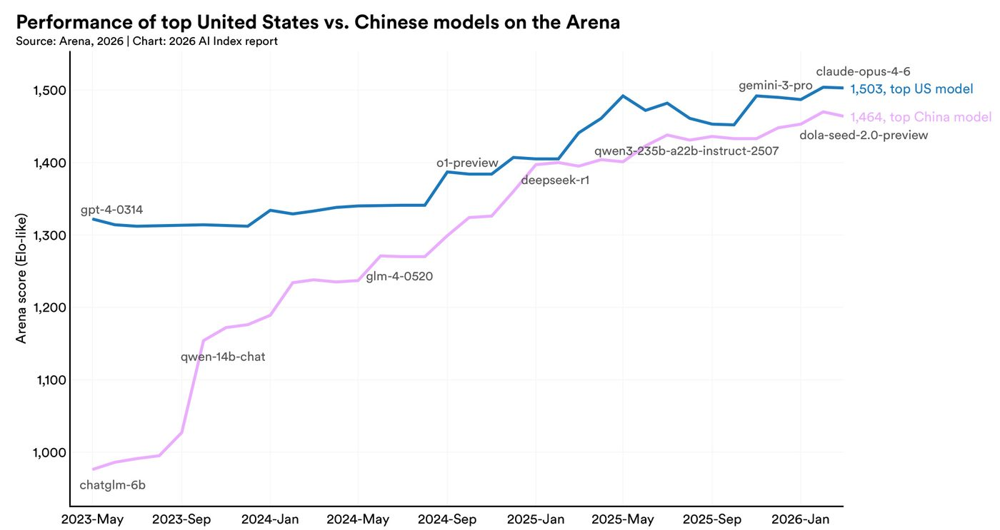

El Unitree H1 paró el crono en 50:26 y el titular recorrió medio mundo en 24 horas por lo que también te damos una checklist de 5 preguntas para no tragarte el próximo record de un humanoide.
Cincuenta minutos, veintiséis segundos. Un humanoide acabó la media maratón de Pekín siete minutos por delante del mejor tiempo que ha hecho un humano corriendo sobre esta Tierra. Y no es lo interesante de la noticia.
Conviene dejar el dato limpio antes de opinarlo. Hace un año, en la primera edición de esta misma maratón, casi ningún humanoide logró terminar los 21 km — se caían, chispeaban, acababan empujados por un ingeniero con una fregona de seguridad. En abril de 2026 cruzaron meta de forma autónoma decenas, y el Unitree H1, cabeza de cartel de Unitree Robotics (Hangzhou), firmó el tiempo que ha dado la vuelta al planeta.
Trece días antes, el mismo modelo había registrado una velocidad punta de 10 metros por segundo en un tramo de 1,9 km con curvas. Para referencia: 10 m/s es el ritmo al que corre un velocista profesional en los últimos cien metros de un 100 liso. Un humanoide autónomo mantiene eso en asfalto urbano con esquinas y baches. No es humo. Es un salto real de ingeniería respecto a 2025.

Imagen: el Unitree H1 durante la media maratón de Pekín del 19 de abril de 2026. Fuente: prensa oficial del evento (cobertura Reuters / France24 / China Daily).
Así que, sí: escribimos esto con respeto por el equipo de Unitree. Batir el récord humano por casi siete minutos no es mérito menor — aunque el humanoide pese menos que el corredor, tenga patas optimizadas para una sola tarea y un equipo entero detrás pendiente de su batería. Es noticia.
Ahora, el problema: el titular global se ha leído como otra cosa.
Cuando un medio generalista titula "un humanoide bate el récord mundial humano", el lector promedio — que nos lee a nosotros, a Xataka, al periódico del domingo — hace una extrapolación emocional: si corre más rápido que un humano, entonces también friega mejor, dobla la ropa, cuida de una abuela, responde al timbre. Es el error de categoría más frecuente en noticias de robótica.
No. Correr 21 km en asfalto plano es un problema resuelto, con un entorno muy predecible (el cronometrador no mueve la esquina), una tarea muy repetitiva (paso tras paso) y un único criterio de éxito (cruzar la meta antes de agotar batería). El Unitree H1 está exquisitamente optimizado para eso — como el Fórmula 1 está exquisitamente optimizado para girar a la izquierda en Monza. Pero el coche de Fórmula 1 no va bien al supermercado.
Y aquí entra Stanford con la cifra que hoy nadie ha puesto en portada.
El AI Index Report 2026, publicado la semana pasada por el Institute for Human-Centered Artificial Intelligence de Stanford, mide los mejores sistemas de humanoides del mercado contra el benchmark Behavior-1K: mil tareas domésticas sacadas de encuestas reales a humanos sobre lo que querrían que un robot hiciera en casa. Recoger calcetines. Vaciar el lavavajillas. Avisar si el cazo está hirviendo.
Resultados del informe, sin adornos:
La cita textual del informe cierra el ángulo: "Los benchmarks más duros para una IA son los que requieren actuar en el mundo real, donde los entornos son impredecibles y los errores tienen consecuencias físicas." Traducido: una sábana doblada no es un 21 sin obstáculos.

Imagen: el gap entre "el robot en lab" y "el robot en tu cocina" que no aparece en los titulares. Fuente: AI Index Report 2026, Stanford HAI.
Publicamos hace unos días dos editoriales que ahora encajan como piezas. En Humanoides en casa: cuánto falta de verdad defendimos que la brecha entre demo y hogar real es más grande de lo que el marketing admite. En Humanoides domésticos 2026: los 7 que puedes comprar o reservar pusimos precio, fecha y letra pequeña a cada opción existente.
La maratón de Pekín no contradice nada de eso. La refuerza. Porque lo que hoy sabe hacer un humanoide doméstico de gama alta — con UniX AI Panther ya entregando en hogares reales, con el 1X NEO a 20.000 $ para quien lo preorder, con Neura 4NE-1 en 98.000 € edición Porsche Design — sigue siendo mover objetos en entornos controlados, despacio, bajo supervisión humana remota. Eso es perfectamente respetable. Pero no es autonomía doméstica. Y desde luego no es un mayordomo.
Correr más rápido que un humano es resultado deportivo. Doblar una sábana es inteligencia contextual: decidir si está limpia, saber que ese olor nuevo significa lejía, recordar que la dueña no quiere la misma pila donde los niños ponen sus pijamas, acabar a tiempo para que no empiece la serie, no romper la tela. Hoy el mejor humanoide del mundo lo logra 12 veces de cada 100 intentos con el criterio mínimo de no haber tirado el planchador por el camino.
Nos la queremos guardar como regla de lectura. Cuando un fabricante publique su próxima demo, su próximo récord, su próximo robot que limpia tu casa en 3 minutos, nosotros — y tú, si nos lo permites — haremos cinco preguntas antes de compartir el vídeo.
El benchmark Behavior-1K de Stanford se construyó preguntando a mil personas qué tareas querrían que un robot hiciera en su casa. Las respuestas más repetidas: doblar ropa, vaciar el lavavajillas, recoger calcetines del suelo. Los mejores humanoides del mercado las completan con éxito y seguridad el 12% de las veces. El récord de Pekín no cambia ese número.
El titular de esta semana dice que un robot ha superado a un humano. La verdad periodísticamente incómoda es que lo ha superado en una sola cosa, muy acotada, muy optimizada y muy irrelevante para tu casa. Celebramos el salto de ingeniería; desconfiamos de la lectura que lo convierte en argumento de compra. Un robot que cruza una meta no es un robot que entra por tu puerta — y los dos fabricantes lo saben muy bien.
Por eso, cuando llegue el próximo récord — que llegará antes de verano, el H1 corre a 10 m/s y a ese ritmo termina en 35 minutos — queremos estar leyéndolo con las cinco preguntas de arriba al lado. No porque seamos escépticos profesionales. Al revés: porque creemos que la robótica doméstica merece una cobertura mejor que la que hoy le estamos haciendo entre todos. Y esa cobertura empieza por leer los titulares despacio.
Ese es, por cierto, el único trabajo que un humanoide no nos va a quitar en los próximos veinte años.